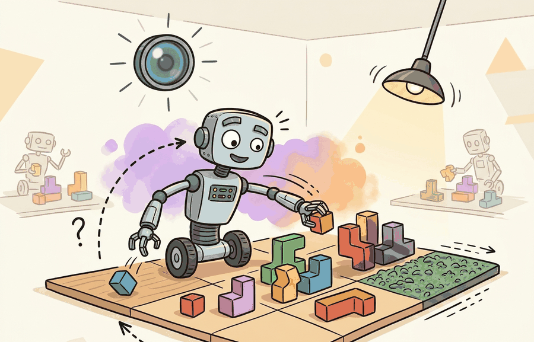

A Careful Control Loop

Visual, physics, sensor, and task randomization are four different levers, not four names for the same trick. Visual randomization teaches perception to survive appearance shift; physics randomization covers contact and dynamics; sensor randomization covers measurement noise and calibration drift; task randomization covers layouts, goals, object sets, and start states.
For Visual, physics, sensor, and task randomization, the transfer argument should name which simulator gap is randomized, which real variable it approximates, and which evaluation panel checks whether transfer improved.
What This Section Builds
This section makes the randomization taxonomy operational. It shows how to keep image variation, physical dynamics, sensor models, and task layouts separate in the manifest while still sampling coherent episodes.
The goal is to avoid two common errors: randomizing visual factors when the real problem is contact, and randomizing dynamics while leaving the sensor model cleaner than the robot's camera, depth stream, or joint encoder.
A strong randomization plan names factor class, unit, distribution, coupling rule, and evaluation split. If those fields are missing, the reader cannot tell whether the method covers the deployment gap or only makes the simulator look busy.
Theory
Visual factors change the observation distribution: texture, lighting, background, object color, reflections, blur, and occlusion. Physics factors change transition dynamics: mass, friction, restitution, damping, motor gain, delay, and contact solver tolerance. Sensor factors corrupt measurement: intrinsics, extrinsics, quantization, dropout, rolling shutter, depth holes, latency, and encoder noise. Task factors change the semantic problem: object category, goal pose, distractors, clutter, start state, and success tolerance.
The important detail is coupling. A shiny object should affect both appearance and grasp friction; a camera moved sideways should change intrinsics or extrinsics and the visible occlusion pattern; a heavier object should affect acceleration, slip, and controller effort. Independent sampling is easy, but coherent sampling is what makes synthetic episodes physically teachable.
The mechanism is factor-specific stress testing. Each factor class targets a different failure channel, so the manifest should preserve class labels and coupling rules rather than flattening everything into a single random seed.
Worked Example
For a tabletop push task, the following snippet records one coherent episode sample. Notice that each factor carries a class label, so the later failure analysis can separate camera noise from contact uncertainty and task layout.
# Sample one coherent randomization manifest for a tabletop episode.
# The class label keeps visual, physics, sensor, and task factors auditable.
from dataclasses import dataclass
@dataclass
class FactorSample:
factor_class: str
name: str
value: str
def as_row(self) -> dict[str, object]:
return asdict(self)
episode = [
FactorSample("visual", "albedo_shift", "matte blue object"),
FactorSample("physics", "block_table_friction", "0.52"),
FactorSample("sensor", "depth_dropout_rate", "3 percent"),
FactorSample("task", "goal_offset_cm", "(4, -2)"),
]
for sample in episode:
print(f"{sample.factor_class}: {sample.name} = {sample.value}")FactorSample list keeps each randomized value tied to its subsystem. That makes the episode useful for later failure triage because the same rollout can be grouped by visual, physics, sensor, or task stress.The from-scratch fragment is for understanding the manifest. In a practical system, use a simulator or renderer that logs factor class, sampled value, seed, and coupling metadata beside every image, state, action, and success label.
Practical Recipe
- Group candidate factors by class: visual, physics, sensor, and task.
- Give each factor a unit, range, distribution, and plausibility source.
- Write coupling rules for factors that should move together, such as camera pose and occlusion.
- Reserve held-out factor combinations for evaluation, including rare but plausible combinations.
- Report aggregate success and failure labels by factor class, not only by total episode count.
A randomization plan is evidence only when it names the randomized factors, ranges, sampling distribution, coupling rules, held-out real measurements, and failure labels. Synthetic data should improve a measured transfer bottleneck, not merely increase the number of rendered images.
The common mistake is factor leakage. If the same object meshes, camera poses, backgrounds, or goal layouts appear in both training and evaluation under different seeds, the model may recognize the split rather than generalize across it.
A mobile manipulation team might randomize corridor lighting, wheel slip, depth dropout, obstacle layout, and target shelf pose. The evaluation report should say whether failures concentrate in sensor dropout, low-friction turns, cluttered layouts, or appearance changes, because each answer leads to a different fix.
If every failed rollout says only "seed 42," the randomization plan has hidden the evidence instead of recording it.
Domain randomization couples the parameter distribution to the task. Sampling too narrowly is like training only on sunny California roads and being surprised by Seattle in November.
Current research is moving from independent random knobs toward structured generative worlds, adaptive factor selection, and dataset provenance checks. The frontier question is which factors should be sampled broadly, which should be reconstructed from real measurements, and which should be left fixed to protect task semantics.
Can you classify each randomized factor as visual, physics, sensor, or task, then name one held-out combination that tests it? If not, the experiment boundary is still too vague.
Visual, physics, sensor, and task randomization becomes useful when each class has a role in the closed loop. Visual factors stress perception, physics factors stress prediction and control, sensor factors stress state estimation, and task factors stress planning and generalization.
The graduate-level habit is to separate three claims. The coverage claim says the sampled factors overlap deployment. The coherence claim says sampled combinations could occur together on a real platform. The evidence claim records which factor class explains the improvement or remaining failure.
| Tool or Library | Role in the Topic | Builder Advice |
|---|---|---|
| Omniverse Replicator | Visual and sensor randomization | Use it when appearance, camera metadata, and synthetic labels must be exported together. |
| BlenderProc | Procedural visual task layouts | Use it when object placement, occlusion, and annotation coverage need scripted control. |
| MuJoCo or MJX | Physics randomization | Use it when mass, damping, friction, actuator, and contact ranges are central to transfer. |
| Isaac Lab | Parallel task and dynamics randomization | Use it when thousands of coherent randomized rollouts are needed for policy training. |
| ROS 2 bags | Sensor and real episode replay | Use them to calibrate noise, delay, dropout, and timing against real robot logs. |
A robust implementation starts with a manifest schema that can survive scale. Code Fragment 2 extends the evidence record so the same script can compare a visual-only run, a physics-only run, a sensor-only run, and a combined run on the same task panel.
- Write a one-paragraph task contract with observation, action, success, and failure fields.
- Start with the smallest simulator, dataset, or wrapper that exposes the task contract faithfully.
- Run one deterministic smoke test and one perturbation test before scaling.
- Save a single result artifact containing configuration, seed, metrics, videos or traces, and failure labels.
- Compare methods only when one script evaluates them on the same task panel.
Expected output: the printed trace should expose the tool, factor classes, held-out combination, metric, and failure breakdown. If one of those fields is missing, the example is not yet an evaluation artifact.
When a combined randomization experiment fails, do not treat the combined score as the diagnosis. Run ablations by factor class, then rerun the most suspicious coupled combination. This pattern distinguishes insufficient visual coverage from impossible physics, corrupted sensor modeling, and task-layout leakage.
Visual, physics, sensor, and task randomization are useful when each factor class has a plausible range, a coupling rule, a held-out test, and a failure label tied to the closed-loop task.
Build a four-class factor table for a robot task: visual, physics, sensor, and task. For each class, name one plausible factor, one coupling rule, one held-out combination, and one failure label.
Section 13.3 → turns those factor ranges into a curriculum that expands only when the policy is ready for harder variation.
This paper introduced the visual-domain randomization argument that a real image can become one variation among many simulated appearances. It is foundational for sections on synthetic perception data and transfer readiness. Readers should connect this source to visual, physics, sensor, and task randomization when deciding what is reusable, what is benchmark-specific, and what must be remeasured.
This paper studies randomized dynamics for robotic control transfer. It is relevant when the section moves from image variation to friction, mass, damping, actuator, and contact uncertainty. Readers should connect this source to visual, physics, sensor, and task randomization when deciding what is reusable, what is benchmark-specific, and what must be remeasured.
This work gives a theoretical view of domain randomization as transfer across a family of parameterized MDPs. Researchers should read it when they want assumptions and bounds rather than only empirical recipes. Readers should connect this source to visual, physics, sensor, and task randomization when deciding what is reusable, what is benchmark-specific, and what must be remeasured.
NVIDIA. "Omniverse Replicator Documentation."
Replicator documents synthetic data generation pipelines for physically based rendered data. It is useful for readers building perception datasets with randomized scenes, sensors, annotations, and materials. Readers should connect this source to visual, physics, sensor, and task randomization when deciding what is reusable, what is benchmark-specific, and what must be remeasured.
DLR-RM. "BlenderProc Documentation and Examples."
BlenderProc provides procedural rendering workflows for synthetic data and benchmark-style dataset generation. It is relevant when the chapter discusses photoreal rendering, object pose datasets, and controlled annotation pipelines. Readers should connect this source to visual, physics, sensor, and task randomization when deciding what is reusable, what is benchmark-specific, and what must be remeasured.